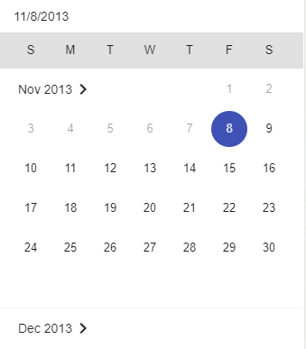
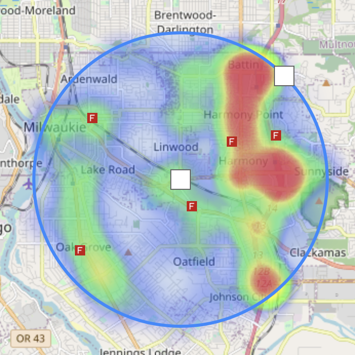
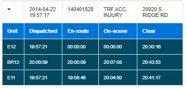

Infomation
Synopsis
The goal of this project was to provide a way to visualize traffic accidents within the Washington and Clackamas counties in Oregon. This map has a heatmap overlay of every traffic accident, injury or non-injury incident, between the years 2014 and 2016. This allows the user to view hotspots in both counties which can help identify problematic intersections or determine if fire stations are located appropriately around the county with relation to traffic accident incidents. This data was provided by the Washington County Consolidated Communications Agency (WCCCA).
This was created during Fall 2021 as the semester project for Dr. Jia Zou's Database Management (CSE412) course at Arizona State University
Features
- Dynamically generated heatmap
- Heatmap filtering by area, date, or both
- Data table of mapped incidents with units assigned
- Adjustable heatmap extrema and radius
User Manual
The sidebar has four icons on the left side of the panel at the top and bottom. Clicking these icons switches between the following 4 pages: Infomation, Filtering, Data View, and Settings.
Filtering
-
Area
-
Purpose
-
Adding
-
Removing
-
Date
-
Purpose
-
Adding
-
Removing
Filtering by date allows the user to restrict the incidents on the map between a lower and upper bound.
The date filter has 2 text boxes: the left is the lower bound and the right is the upper bound. The lower bound specifies the minimum date that an incident could occur and the upper bound is the maximum date an incident could occur. Entering a valid date into either of these text boxes will restrict the incidents shown on map between the entered bounds. The minimum valid date is 11/8/2013 and the maximum is 10/21/2016. Additionally, the arrow pointing down on the text boxes can be clicked to enable calendar mode for easier date selection.
Once the upper and lower bounds are set to satisfaction, the filter can be applied by clicking the apply date filter button (). Both the date filter and area filter can be applied simultaneously.
The date filter can be removed by pressing the remove date filter button (). This will reset the map to before the date filter was applied.
Note: removal does not reset the area filter. -
This feature will allow the user to place down a movable circle with an adjustable radius. Once placed the circle will restrict the incidents within the bounds of the circle providing a more focused view of the heatmap to a certain geographical area. 
The circle filter can be added to the map by pressing the add circle button (). Once added, the circle filter can be resized and dragged around the map which will dynamically filter the incidents automatically. Both the area filter and date filter can be applied simultaneously.
The circle filter can be removed by pressing the remove circle button () this will reset
the map to before applying the area filter.
Note: removal does not reset the date filter.
Data View
The data view page displays a table of all incidents currently visibile on the map. The arrow on the first column facing right can be clicked and the call can be expanded to display the units that were assigned to that incident as well as their statuses.
The incidents are limited by pages. Press the right arrow button to change to the next page and press the left arrow button to return to the previous page.

Dates before 2014-02-14 do not have units.
Settings
The settings page allows the user to change certian metrics of the heatmap such as radius, opacity, and scaling.
Radius
Opacity
Scale Radius
Local Extrema
Sets the search distance for incidents on the map to be grouped in the heatmap. If scale radius is enabled, then it should be small and less than 1 ie: 0.5, 0.05, 0.005, etc.
The level of transparacy of the heatmap in relation to the map
Scales the radius based upon the map zoom
Uses the data maximum within the current map boundaries
Once the settings are configured to the user's satisfaction, they can be applied by clicking the apply button.
Technology
- Ubuntu 20.04.3 LTS
- Apache 2.4.41
- PostgreSQL 12.9
- PHP 8.0.13
- HTML5
- CSS3
- Awesome Fonts
- JavaScript
- Leaflet 1.2.0
- Sidebar 3.2.3
- Draw 1.0.4
- Heatmap 2.0.5
- Angular 1.7.6
- Animate 1.7.6
- Aria 1.7.6
- Material 1.1.12
- Messages 1.7.6
Credits
The Github Repository is avaialble here!